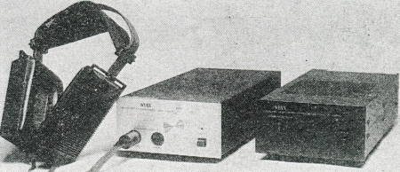
ED-1
1980年代、当時のドイツではダミーヘッドによる集音技術が比較的盛んに行われていたようだ。
STAXの企業神話で良く登場するダイムラー・ベンツからの「依頼」も、開発中のクルマのエンジンやトランスミッション、サスペンションなどから発生するノイズをダミーヘッドマイクで録音し、それを視聴する為のヘッドフォンとしてSR-Λの改良の要請であった。またバイノーラル録音によるFM放送も盛んだったという。
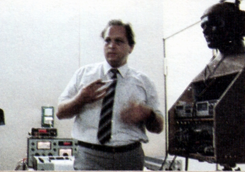
当時、IRT（ドイツ放送技術機構）が手がけたノイマン社製ダミーヘッド KU80の改良型、KU81iを用いたドイツの「Audio Electronics社」製作のダミー・ヘッド録音CDがドイツで「AUDIO/STAX」ブランドで発売されていた（＊）。それにあわせて登場したのが、SRM-Moniterであり、その内蔵イコライザー部を独立させたものがED-1である。

（ED-1。シルバータイプの他に塗装されたバージョンもあったようだ）
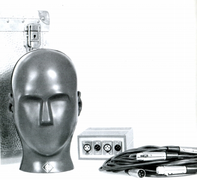
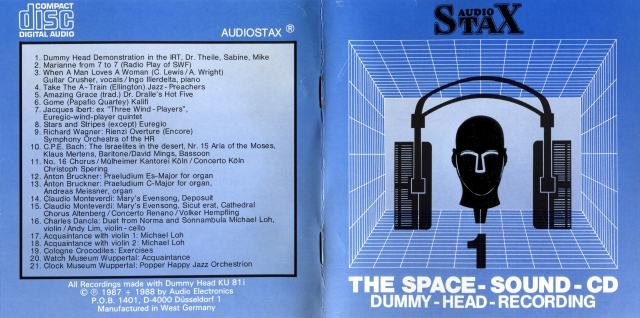
(「AUDIO/STAX」ブランドのＣＤのブックレット）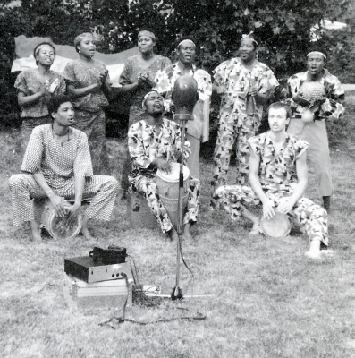
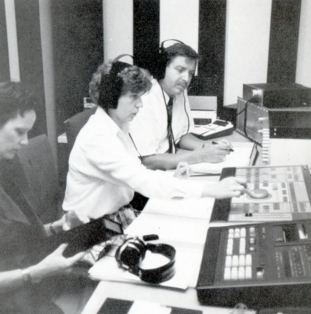
（ライナーに納められた収録風景とエンジニアによる作業風景。SRM-MoniterやSR-ΛやSR-X系統のヘッドフォンが写っている。）
イコライザーの目的は、ダミーヘッドで録音し、ヘッドフォンで再生した際に、実際に集音した場所の状況に近付ける為の周波数特性の補正であり、さらにKU81iにあったスピーカーによる視聴も考慮した調整の補正も目的としていたようだ。
イコライジング・カーブは、1970年代からIRT（ドイツ放送技術機構）でDr.G.Theile氏が行っていた、外耳道の中に小さなプローブ・マイクを挿入し、SR-Λ（ラムダ）Professional
を含む10台以上のヘッドフォンの周波数特性を複数の被験者について測定し、その平均を計算し発表された成果に基づいている。ただしED-1及びSRM-Moniterの内蔵イコライザーに関しては、「Audio Electronics社」から依頼を受けSTAX自身が最終的なSR-Λ（ラムダ）Professional
の補正に特化したイコライザー（EQ）カーブを作ったそうである。
なお、当時の雑誌記事によればAudio
Electronics社製のCD以外のバイノーラル収録のレコード・CD等でも効果があったそうだが、ネット上の意見では、合わないレコード・CDもあるようだ。
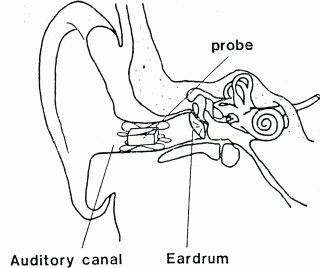 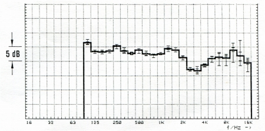
（外耳道に入れられたプローブとSR-Λ（ラムダ）Professional の測定特性）
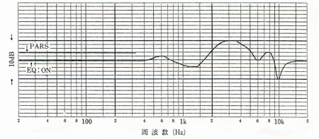
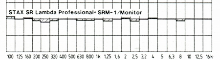
（ED-1のイコライザー周波数特性と、補正したSR-Λ（ラムダ）Professional の測定特性）
イコライザー回路は、片チャンネルあたる6個のバンドパス・フィルター（ディップ用に3個、ピーク用に3個）で構成されており、ピーク及びディップの周波数は半固定抵抗で調整されている。それに十分な電流容量の大型トランスを組合せ、SRM-1/MK2PROのシャーシを流用と思われる非磁性体（アルミ合金）のケースに納めている。
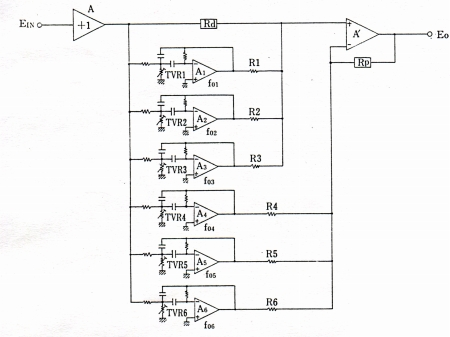
（イコライザー回路のブロック）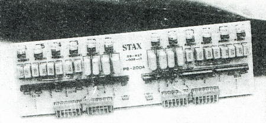 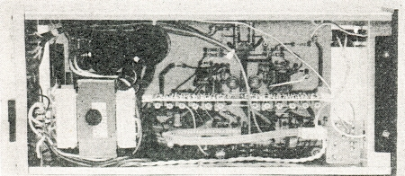
（イコライザー回路基盤とシャーシ内部の様子）
ダミーヘッド録音用のイコライザー（EQ）カーブはSR-Λ／Professional用以外にも用意され、SR-5用としてED-5、SR-Λ／Signature用としてED-1／Signature という製品も有ったそうだ。いずれもメインとなるユーザーがいたドイツへ優先出荷されたが、遅れて国内でも販売されたそうだ。
（＊）「Audio/STAX」のCDは国内販売も予定されており、一時は�慨TAXのカタログでも紹介されていた。しかし、アメリカのレコード会社「STAX」が存在し、先方よりクレームが入ったため、国内での有償販売は中止されたそうである。管理人の手元にあるCDは、当時の東池袋の視聴室で購入したものと記憶している。
この文書を作成するにあたって、�鬼TAXより「Audio Electronics社」製作のダミー・ヘッド録音CDなどについて貴重な情報をいただきました。どうもありがとうございます。
STAXのインデックスヘ